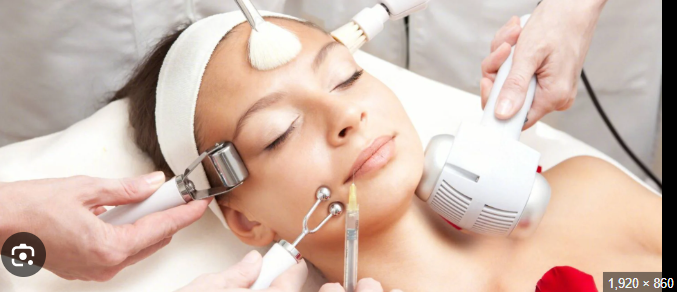
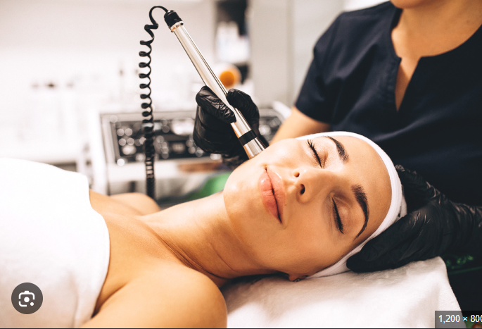
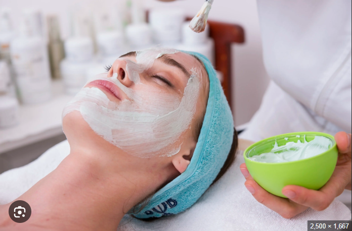

Entre los tratamientos más comunes se encuentran las limpiezas faciales, hidratación de la piel, mascarillas, exfoliaciones y tratamientos capilares. Estos procedimientos ayudan a mantener una piel saludable y una mejor apariencia estética. Algunos de los más comunes son las limpiezas faciales profundas para eliminar impurezas y puntos negros, las hidrataciones y exfoliaciones para renovar la piel, y los tratamientos antiacné o antiarrugas que ayudan a controlar problemas específicos


